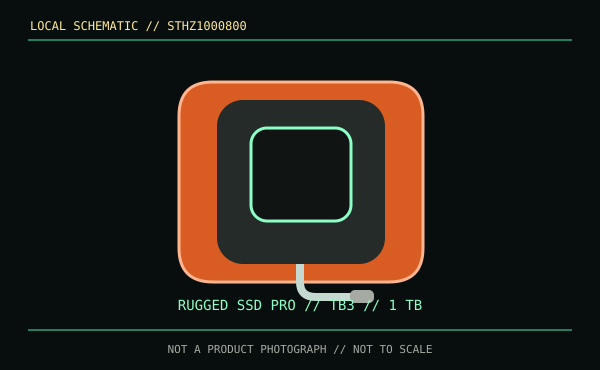

[ REMOVABLE MEDIA // MODEL-SPECIFIC RECORD ]
LaCie Rugged SSD Pro 1 TB (STHZ1000800)
The STHZ1000800 is a complete rugged external SSD with an integrated Thunderbolt 3 connection. Despite its USB-C-shaped connector, it is not a generic USB-only portable SSD.

IDENTIFICATION: Keep the Pro designation and STHZ1000800 SKU with this record; the non-Pro LaCie Rugged SSD is a different USB product.
Format, capacity and compatibility
| Product / part ID | LaCie Rugged SSD Pro, 1 TB, STHZ1000800 |
|---|---|
| Interface | Thunderbolt 3 over integrated USB Type-C connector. The data protocol is Thunderbolt 3, not merely USB-C; do not assume that every USB-C port can enumerate the drive. |
| Performance | Seagate/LaCie rates sequential read performance up to 2,800 MB/s on a compatible Thunderbolt 3 host. The cited specification does not establish a guaranteed sustained write rate. |
| NAND / endurance | The consumer datasheet does not specify NAND type or TBW endurance for this integrated portable-drive SKU. |
| Compatibility | Requires a compatible Thunderbolt 3 host and supported OS/driver setup; verify Thunderbolt support explicitly in the computer manual. USB-C connector shape or USB-only capability is insufficient. |
| Protection / SKU caveat | IP67, drop and crush ratings are defined by manufacturer test conditions. Keep ports/cable dry and follow the current product manual; ruggedness does not replace backup. |
Handling and preservation
Protect the integrated cable from tension and damage, and avoid connecting the drive while wet or dirty. Keep a Thunderbolt-capable recovery host available if the data matters. Make checksummed copies on independent systems and do not rely on this drive as the only archive copy.
Sources and standards
- LaCie / Seagate — Rugged SSD Pro product pageManufacturer product details and interface/protection information.
- LaCie / Seagate — Rugged SSD Pro data sheet (PDF)Manufacturer capacity, Thunderbolt 3 and performance data.
- Thunderbolt Technology — technology and host overviewInterface compatibility reference; confirm the actual computer's port capability.